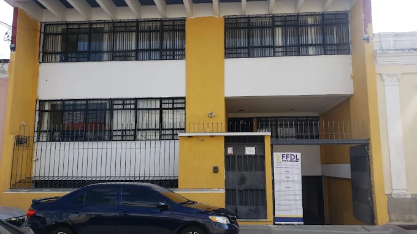
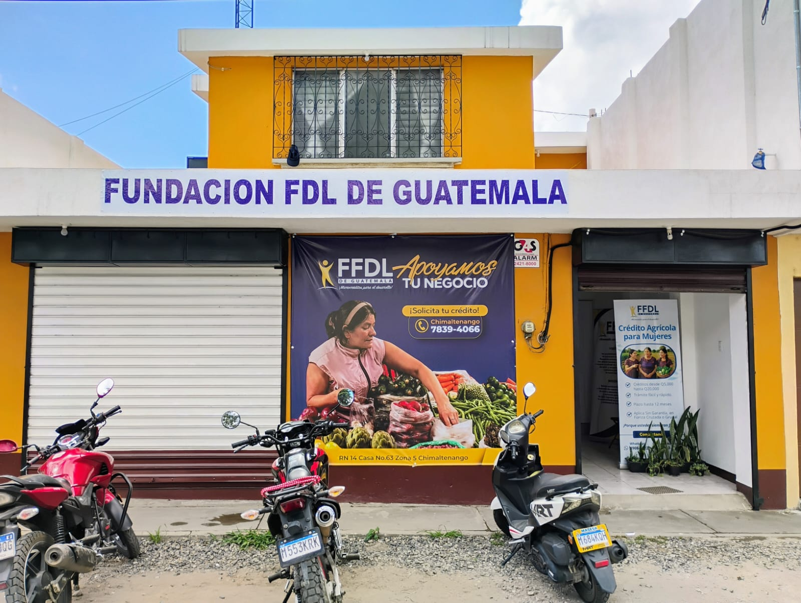
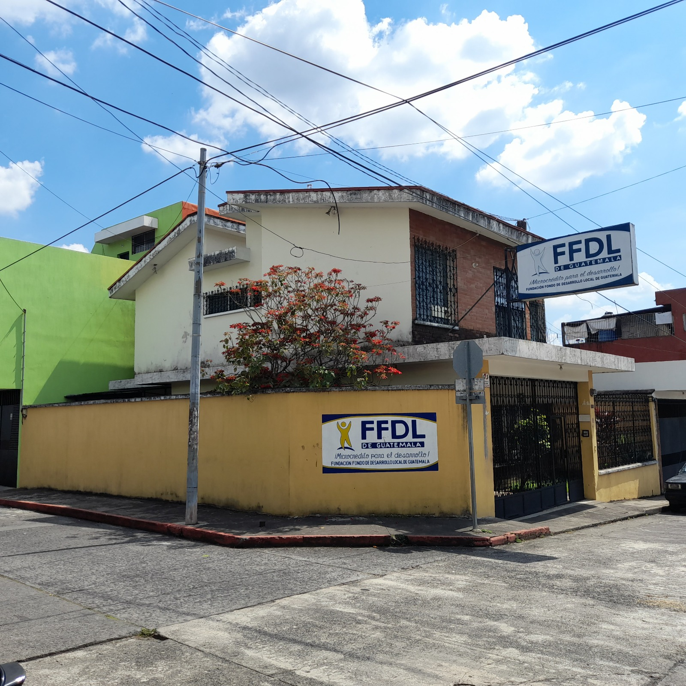
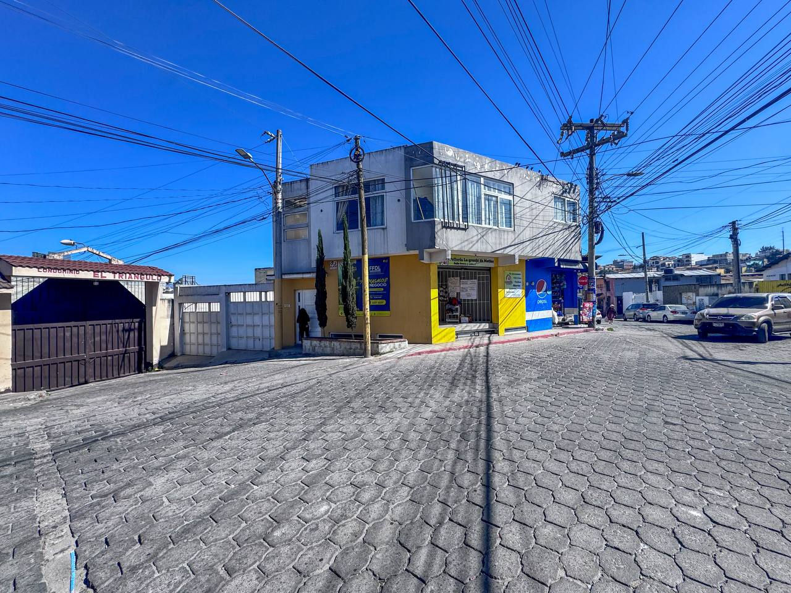

Visítanos en nuestras oficinas a nivel nacional.
Dirección: 12 calle "A" 2-34 zona 1, Guatemala
Atención: Lunes a Viernes 7:00 AM - 4:00 PM | Sábados: 8:00 AM - 12:00 PM
Teléfono: 2232-4301
WhatsApp: 5194-8831
Correo: info@ffdldeguatemala.org

Haz clic en la imagen para entrar al mapaDirección: RN14 Casa No. 63 Zona 5, Chimaltenango
Atención: Lunes a Viernes 7:00 AM - 4:00 PM | Sábados: 7:00 AM - 11:00 AM
Teléfono: 7839-4066
Correo: info@ffdldeguatemala.org

Haz clic en la imagen para entrar al mapaDirección: 4 Av. 1-05 Zona 1, Mazatenango
Atención: Lunes a Viernes 7:00 AM - 4:00 PM | Sábados: 7:00 AM - 11:00 AM
Teléfono: 7872-3492
Correo: info@ffdldeguatemala.org

Haz clic en la imagen para entrar al mapaDirección: 14 Calle "C" 19-64 zona 3, entrada a Condominio el Triángulo
Atención: Lunes a Viernes 7:00 AM - 4:00 PM | Sábados: 7:00 AM - 11:00 AM
Teléfono: 7725-4101
Correo: info@ffdldeguatemala.org

Haz clic en la imagen para entrar al mapa